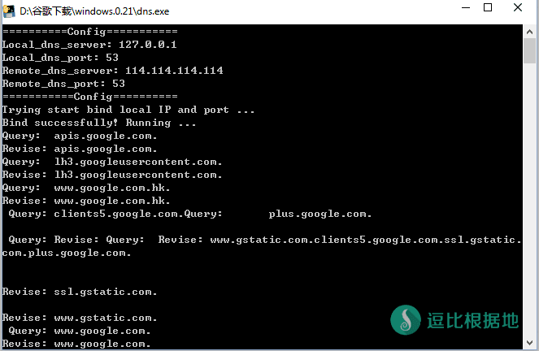
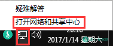
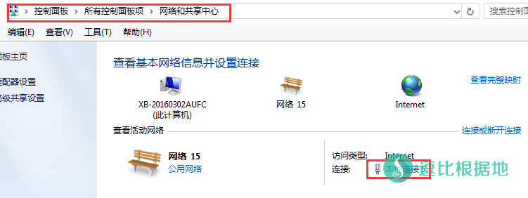
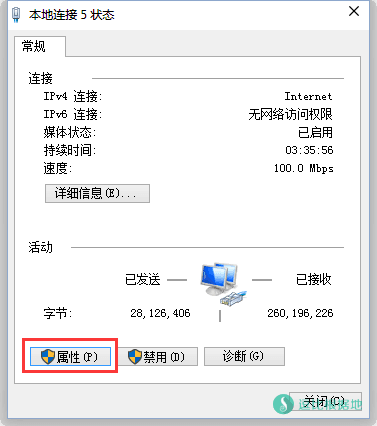
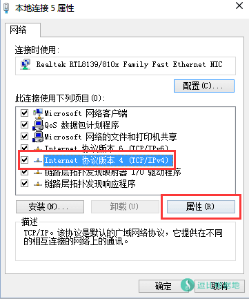
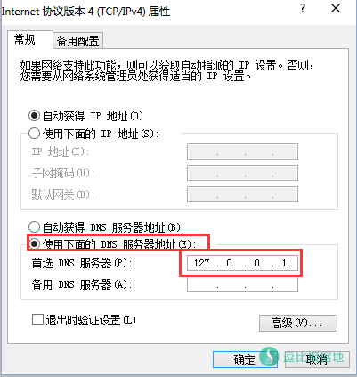
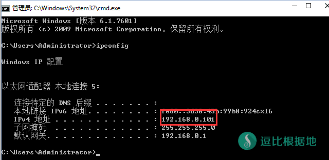
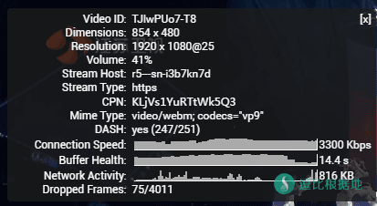

今天无聊，就在Github上面乱逛，然后就莫名其妙的发现了这个软件，看了一下这个软件的第一个Releases是15天前(今天14日)，也就说刚做出来的工具，测试了一下可以Google、Youtube看视频，不过速度似乎不是很稳定。但是是免费的，大家可以研究研究。
简单的原理可能就是：使用公共的SNI代理服务器，然后做一个本地自动的hosts泛域名解析的样子，不懂python也看不懂代码- -。
Github项目地址：https://github.com/dowsnature/dowsDNS/
Linux搭建DNS服务教程：Linux 使用 dowsDNS 快速自建DNS服务器以 科学上网+屏蔽广告
目前 dowsDNS 疑似已经停止维护很长时间了，再加上国内自建 DNS 被墙针对，如非必须，不推荐使用！
注意：DNS和Hosts这两种科学上网方式，都必须使用https，比如访问谷歌：https://www.google.com，使用http明文传输会被墙拦截。
安装教程
首先下载软件：
然后解压到任意文件夹中，进入解压后的文件夹，我们找到这几个文件：
# V0.22版本 bin ├──── dns.exe # 手动启动程序 conf ├──── config.json # 配置文件 ├──── data.json Window.bat # 自动启动脚本 run.py # python启动程序
默认我们是不用管配置文件的，直接打开 Windows.bat ，然后会出现下面这个CMD提示，需要管理员权限运行脚本，否则无法修改DNS服务器为 127.0.0.1 ，如果修改失败，你就需要按下面的步骤手动修改DNS。
======================== 需要管理员权限运行此脚本 ======================== 当前可用操作有： 1 运行本地DNS服务器 2 恢复动态DNS(恢复网络) 3 更新记录文件并运行本地DNS服务器 4 退出 请选择后回车： 1 . 正在设置本地DNS代理，请稍等... 网络 = "本地连接" DNS = 127.0.0.1 . 本地代理已设置！ 若无法使用,请手动修改系统的DNS为:127.0.0.1(默认情况) ==========Config=========== Local_dns_server: 127.0.0.1 Local_dns_port: 53 Remote_dns_server: 114.114.114.114 Remote_dns_port: 53 ===========Config========== Trying start bind local IP and port ... Bind successfully! Running ...

手动修改DNS
你需要设置一下你电脑的DNS为 127.0.0.1 。
按下面的图片步骤执行：
- 打开网络和共享中心
- 点击 本地连接
- 点击 属性 按钮
- 选择 Internet 协议版本 4 (TCP/IPv4) 并点击 属性 按钮
- 选择 使用下面的DNS服务器地址
- 然后填写 首选DNS服务器 为
127.0.0.1，备用的可以留空。 - 然后点击 确定 按钮，一路确定。





然后尝试打开 https://www.google.com、https://www.youtube.com
注意：打开谷歌和youtube类网站都需要是 https 的才行，否则 http 会被墙解包 明文被发现然后 阻断。
如果不能打开，请清理浏览器缓存和刷新DNS缓存。
刷新DNS缓存：
开始 —— 运行 —— 输入 cmd 并回车 —— 显示CMD的窗口，输入 ipconfig /flushdns 并回车，就是刷新DNS缓存了。
如果你需要局域网内其他设备也使用这个软件，那么你需要在CMD中输入 ipconfig 然后就会显示下图。
找到你的 IPv4地址，比如我的 192.168.0.101
然后打开 config.json 配置文件，我们可以看到如下内容：
{
"Remote_dns_server" : "114.114.114.114",
"Remote_dns_port":53,
"Rpz_json_path":"./data/rpz.json",
"Local_dns_server" : "127.0.0.1",
"Local_dns_port" : 53
}
我们需要把 127.0.0.1 改成你的电脑内网IP 192.168.0.101 。
"Local_dns_server" : "192.168.0.101",
然后在重新根据上面的步骤，把本地DNS服务器改为 192.168.0.101 。
然后其他的设备也都设置DNS为 192.168.0.101 。
如果是安卓手机使用的话设置地方是：设置 — WIFI — 长按 当前连接的WIFI —— 静态IP —— 然后填写DNS(也有叫域名的，都一样)。

速度测试
我是联通 50Mbps 环境，ping了一下，发现是泰国的 SNI代理，速度还不错，就是有点不稳定，速度快的时候可以看1080P，慢的就只能720P。

其他可以直接使用并科学上网的 DNS：
以下几个DNS服务器，可以直接使用，不需要做其他设置，就能科学上网和屏蔽广告了。
注意：DNS和Hosts这两种科学上网方式，都必须使用https，比如访问谷歌：https://www.google.com，使用http明文传输会被墙拦截。
Xsico DNS
官方网站 – 科学上网
Public Dns：115.159.157.26
Scholar Dns：115.159.158.38
Mogu DNS
官方网站 – 科学上网+广告过滤
北方推荐：122.114.245.45
南方推荐：115.159.96.69
Pure DNS
官方网站 – 科学上网+广告过滤
北方推荐：123.207.137.88
南方推荐：115.159.220.214
如果不可用，请查看：电脑科学上网 - DNS
转载请超链接注明：逗比根据地 » 一个搭建 本地DNS 以科学上网的小工具 —— dowsDNS
责任声明：本站一切资源仅用作交流学习，请勿用作商业或违法行为！如造成任何后果，本站概不负责！


其他的高端玩法并没有多研究，等这个软件更新稳定下来后，我会“深入”的研究一下更多玩法。